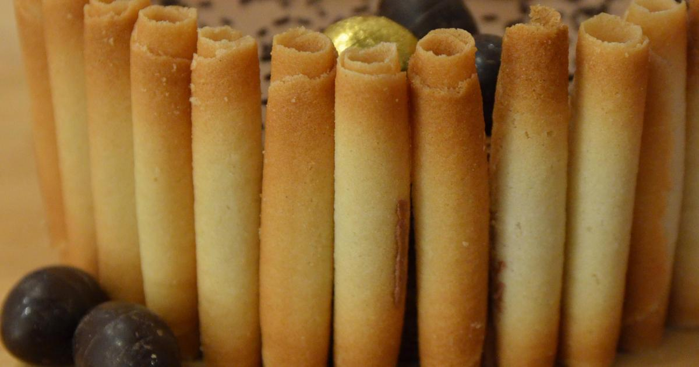

Recettes de confiture : recettes faciles de confiture - Recettes de confiseries
 Recettes CATÉGORIES Les bases Apéritif Entrées Plats Desserts Boissons Menu de la semaine INGRÉDIENTS Viandes Poissons Fruits Légumes Fromage Cuisson des aliments EN VIDÉOS Toutes les vidéos Entrées Plats Desserts Boissons ÉMISSIONS Tous en cuisine Top Chef Le Meilleur Pâtissier RTL vous régale RTL Nous voilà bien Objectif Top Chef Batchcooking Thèmes TENDANCES Recettes de robots culinaires Recettes Thermomix Recettes Cookeo Recettes Companion Recettes Compact Cook Recettes à l'extracteur de jus Recettes Anti-gaspi Bien Manger Recettes Détox Allergies & santé Recettes Fastoches Les recettes préférées des Français LES CLASSIQUES Recettes traditionnelles Recettes pas chères Cuisine régionale Cuisine du monde Cuisine maman / bébé Recettes minceur Apéritif minceur Plats minceur Desserts minceur Salades minceur FÊTES Recettes de Noël Galette des Rois Chandeleur Pâques Fêtes des mères Ramadan Mardi-gras Gâteaux d'anniversaire Saint-Valentin Halloween PLUS D'IDÉES Articles Jeux concours Guide des aliments Cuisine du confinement Actus Actualités Actualités récentes Suggestions du chef Gestes techniques Cuisine facile Conservation Cuisson Aliments Des recettes spéciales télétravailLes 10 légumes de saison à consommer en Mars
Les 10 fruits de saison à consommer en Mars
Émissions Pâques Accueil Catégories Desserts Confiseries Confiture
Confiture
Une bonne tartine grillée recouverte de confiture trempée dans un chocolat chaud. Une petite frimousse se pourléchant les mains après avoir raclé la bassine où grand-mère venait tout juste de finir ses confitures. Combien d'entre nous n'évoquent pas ces moments de l?enfance avec un brin de nostalgie ? La confiture C'est tout un univers, des saveurs variées, du plus doux à l'acidulé. Abricots, cerises, fraises, framboises, myrtilles, oranges, citrons, kiwi, pêches, prunes, rhubarbe, mirabelles, reines-claudes, groseilles, figues, la plupart des fruits se prêtent volontiers à cette préparation. Certains légumes, telle la tomate, mais aussi le lait sont également de la partie. Le secret d'une bonne confiture ? Des fruits bien mûrs, du sucre en proportion suffisante et une juste cuisson. Les différentes recettes vous permettront aussi de marier certains fruits, les pommes à la rhubarbe, par exemple, ou les fraises à l'ananas. Et vous pourrez également opter, à votre convenance, pour des confitures allégées tout aussi goûteuses que leur version classique. Au petit-déjeuner ou au goûter, sur du pain ou dans un yaourt, au c?ur d'un gâteau roulé ou d'une crêpe, sur une tarte ou une tartelette, vous n'aurez plus alors qu?à vous régaler toute l'année.
Les dernières recettes de confiture publiées
Confiture rhubarbe pamplemousse Confiture de rhubarbe et pêche Confiture rhubarbe menthe Confiture de fraises traditionnelle Confiture de citron fait maison Cramaillotte (confiture de fleurs de pissenlit) Confiture de kiwis Confiture de nèfle Confiture aux abricots au Thermomix Confiture de rhubarbe au Cookeo Confiture d’oranges amères et citron Gelée de groseilles Confiture de rhubarbe aux pommes Confiture de citron Confiture de fraises sans sucre Confiture d'abricots Confiture de pêches facile Confiture de lait au Cookeo Confiture d'abricots au Cookeo Gelée de citrons Confiture orange au Thermomix Confiture de mandarines Confiture de cassis Confiture de bananes au Thermomix Confiture de citron au Thermomix Confiture de cerises au Thermomix Confiture de groseilles au Thermomix Gelée de cerises Confiture d'abricots au Companion Confiture de pamplemousse 1 2 3 4 5 Suivant
Bonbons Gelee Nougatines Orangettes Pate A Tartiner Haut de page Chaque jour,
nos meilleures idées recettes
dans votre boîte mail.
Votre adresse email sera uniquement utilisée par M6 Digital Services pour vous envoyer votre newsletter contenant des offres commerciales personnalisées. Vous pouvez vous désinscrire à tout moment en utilisant le lien de désabonnement intégré dans la newsletter. Pour en savoir plus et exercer vos droits , prenez connaissance de notre Charte de Confidentialité .
Oxygem Radins.com PasseportSanté.net M6Météo Weather Wherever.co.uk Fourchette & Bikini Annonceurs - Publicité Partenariats Presse Nous contacter Mentions légales Charte de confidentialité Préférences cookies